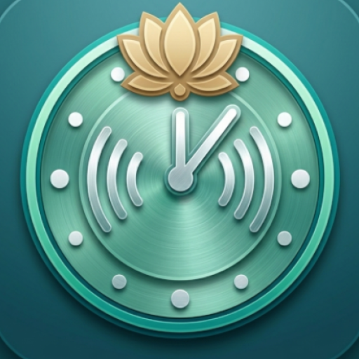

Talking Clock & Alarm · Last updated: May 28, 2026
This Privacy Policy describes how the Talking Clock & Alarm app ("the App") handles information when you use it on your Android device. The App is offered on Google Play and is intended to comply with applicable privacy requirements, including Google Play's data safety and policy requirements.
The App does not collect, transmit, or sell your personal data to any server or third party. All data you create in the App stays on your device unless your device or Google backup settings back it up.
We do not:
The App stores the following data only on your device:
This data is used solely to run the App's features. It is not uploaded or shared.
The App requests permissions only as needed:
No permission is used to collect or send data off your device.
The App uses your device's built-in Text-to-Speech engine for the Talking Clock and talking alarms. Speech is generated on your device. The App does not send alarm messages or other text to our servers. Third-party TTS engines may have their own terms.
The App may participate in Android backup so alarms and settings can be restored after reinstall or on a new device. Backup is controlled by your device and Google account. We do not receive or store your backup data.
The App does not knowingly collect personal information from anyone, including children. It is a utility app and does not target children.
Because data stays on your device, its security depends on your device settings (lock screen, encryption). The App stores data in private app storage and does not transmit it.
We may update this Privacy Policy from time to time. The "Last updated" date at the top will change when we do.
Questions about this Privacy Policy? Contact us at:
siddhidatriapps@gmail.com